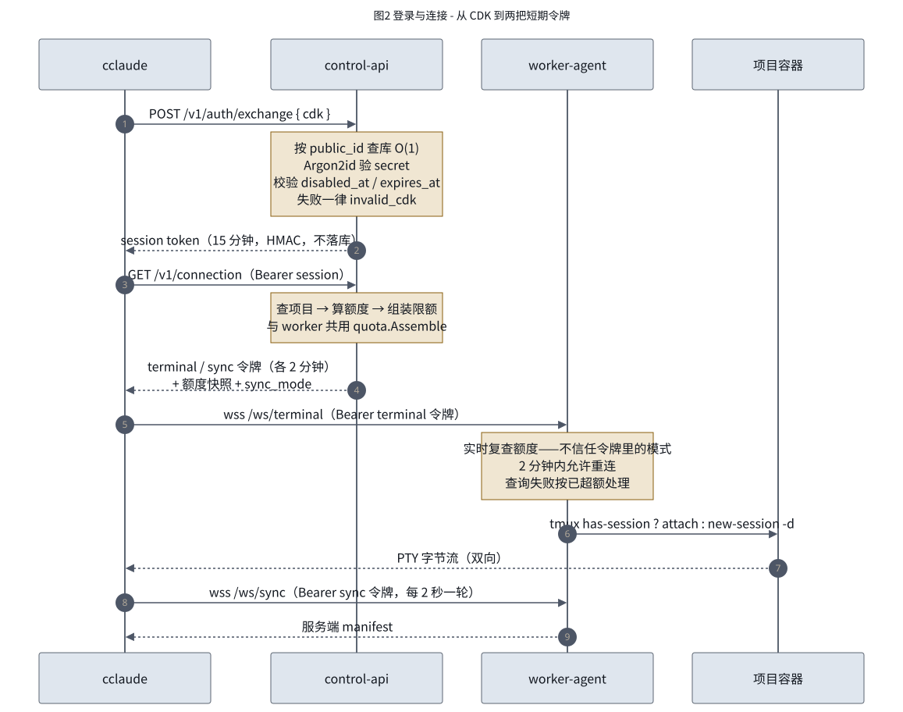

ccw · remote claude workspace
七张图覆盖 ccw 的结构、数据流与运维链路。图中标注的验证强度与 docs/STATUS.md 同步维护——未验证的功能不写成「已完成」。
三层：本地 cclaude、每台节点的自治服务栈、独立一台的 Console 控制平面。关键性质是 Console 不在用户数据路径上——客户端直连节点，Console 停机不影响已配置好的终端与同步。

CDK 形如 ccw_<公开ID>.<密钥>：公开 ID 用于数据库 O(1) 查询，密钥参与 Argon2id 校验。认证失败一律返回 invalid_cdk，不区分「不存在／已禁用／已过期」。
?token=
「断线不中断」的秘密：会话属于容器里的 tmux，不属于任何一条 WebSocket。断开只关 PTY 与 WebSocket，绝不 kill-session。两处 TTY 缺一不可——宿主机侧由 creack/pty 提供，容器侧靠 docker exec -it 的 -t。

客户端每 2 秒拉一次服务端 manifest，与本地基线做三方判断。只有同时知道「上次确认的服务端版本」和「当前本地内容」，才能区分旧副本与新修改。服务端 CAS 是最终裁决：base_revision 不匹配即 conflict，绝不静默覆盖。

一台节点只授权一次 Claude 账号，节点上全部项目共用这一个上游池。因此内部额度闸门不是锦上添花，而是唯一能阻止某个项目吃光全机额度的机制。

产品硬约束：Claude 账号在一台 VPS 上只授权一次。但按项目计量又要求会话 JSONL 分开。两者靠一次嵌套挂载同时满足——projects/ 是 .credentials.json 的兄弟目录，遮蔽它不影响凭据。

在浏览器里填 IP、用户名、密码，Console 经 SSH 把一台空机器变成可用节点。每一步都满足三条性质：幂等、可 precheck 跳过、可从失败步续跑。

三处不能颠倒的顺序：dns-allocate 必须在 compose-up 之前（否则烧掉 Let's Encrypt 的失败限额）；凭据交接必须先验证后落库（否则注入失败会留下连不上的密钥，而密码已丢弃）；push-source 必须在 compose-up 之前（节点要从 Go 源码构建镜像）。